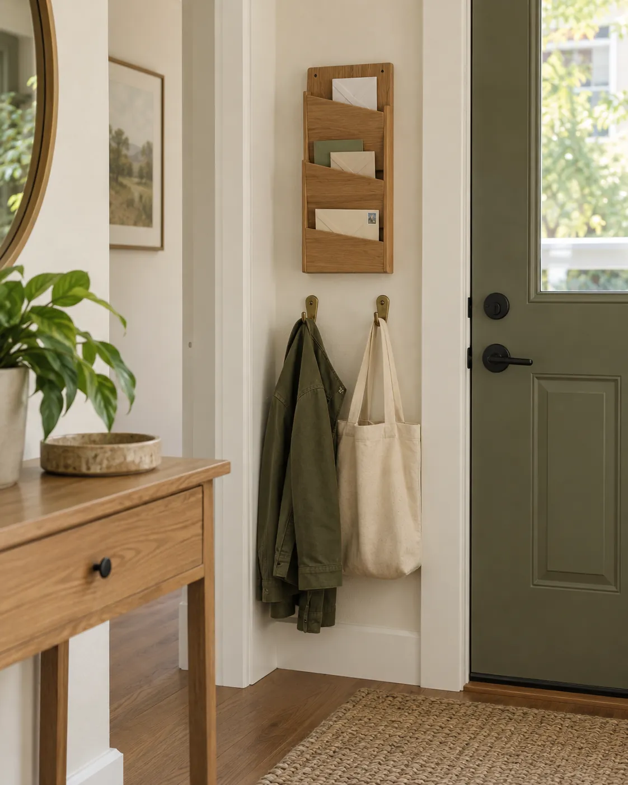
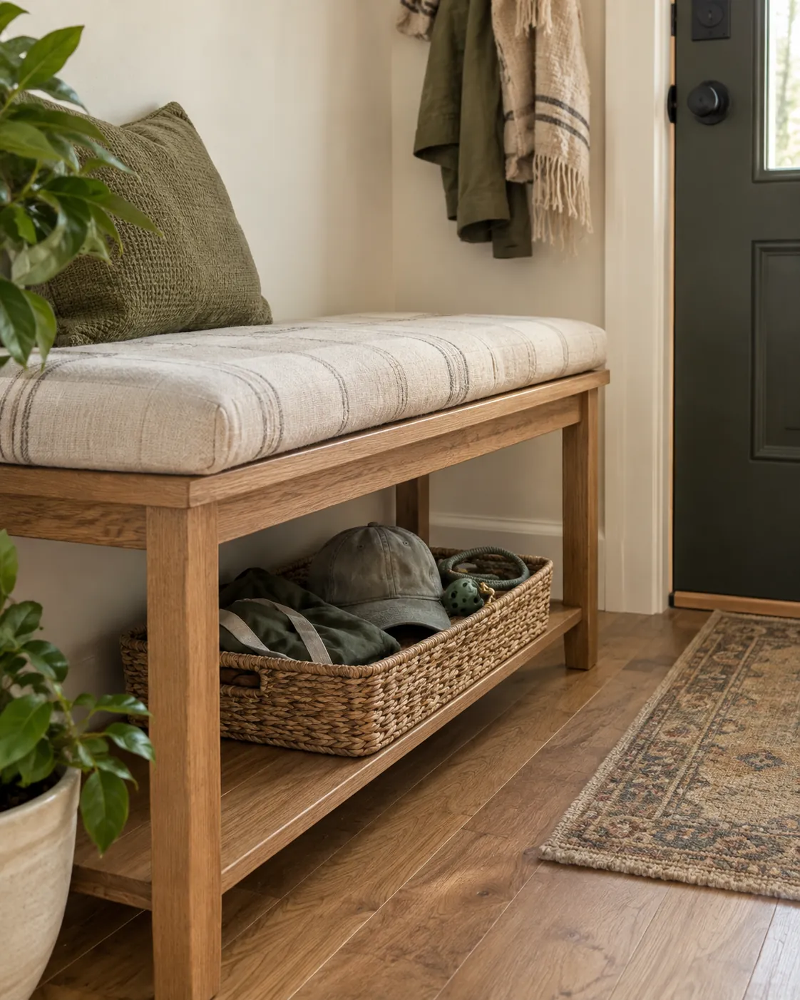
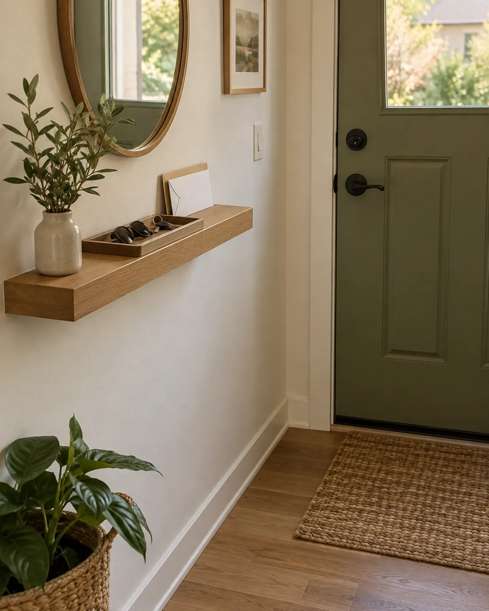
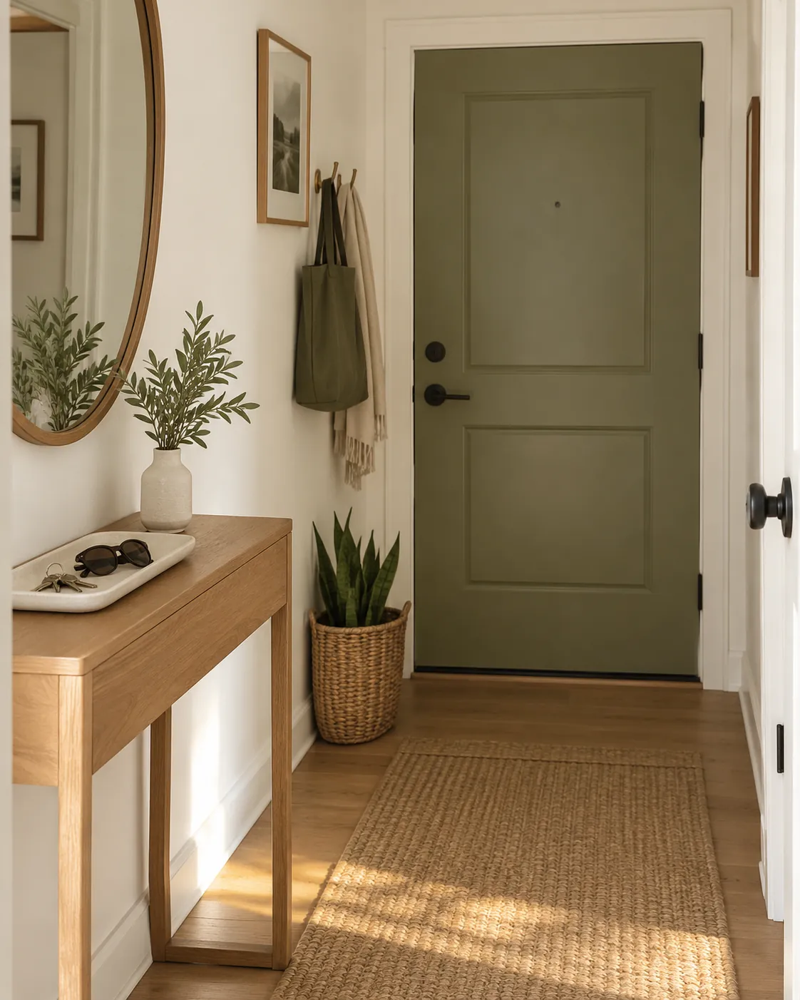

One cluttered spot. One short session. Try this five-step routine for a drawer, an entryway table or a bedside shelf—using what you already have.
Start smallOne spot, not the whole homeUse a timerA gentle stopping pointBuy nothingStart with what you own
A little space you can use again.
This guide includes an affiliate link. As an Amazon Associate I earn from qualifying purchases. Kotiori may also earn a commission from eligible service sign-ups. Photos are illustrative. No membership or purchase is needed to try this routine.
WHAT “20 MINUTES” MEANS
A suggested time limit for your own reset.
This is a written routine created by Kotiori, not a video or an Amazon or Audible program. The minute ranges are flexible prompts, not a tested guarantee. Choose a smaller spot or a shorter session if you need to. Your home does not have to look like the photos.
0–2 MINUTES · ONE SMALL STEP
01
0–2 MINUTES
Pick one small spot
Choose a surface about the size of a tray: the entryway table, one kitchen drawer, or a bedside shelf. Avoid emptying a whole closet. Set a 20-minute timer and gather a bag for rubbish and a basket for items that belong elsewhere. Your goal is to make this spot easier to use today.
Keep it simple: Decide what this spot is for. An entryway might only need keys, today’s mail and the bag you use daily.

2–7 MINUTES · ONE SMALL STEP
02
2–7 MINUTES
Remove the obvious extras
Start with empty packaging, unwanted flyers and ordinary rubbish. Separate recycling according to local rules. Put items you no longer want in a small donation bag, but leave sentimental or complicated decisions for another session. If you share the home, leave other people’s possessions for them to decide.
Keep it simple: Keep bills, personal documents, medicines and anything you are unsure about. Do not rush a decision just to beat the timer.

7–12 MINUTES · ONE SMALL STEP
03
7–12 MINUTES
Collect things that belong elsewhere
Put misplaced items in your basket: the mug that belongs in the kitchen, the charger from the bedroom, the book from a shelf. Keep working on the same small spot rather than following each object into a different room. Leave a manageable amount of time to return everything later.
Keep it simple: A temporary basket is a transport tool, not a new permanent pile. If it fills up, stop adding items and start returning them.

12–17 MINUTES · ONE SMALL STEP
04
12–17 MINUTES
Make the spot easy to use
Wipe the accessible surface using a method suitable for its material. Group the items that genuinely belong here and leave enough room to pick them up easily. Reuse a shallow dish or container you already own if it helps contain small things. A clear, useful space matters more than matching containers.
Keep it simple: For a drawer, keep the most-used items near the front. For an entryway, give your keys one repeatable landing place.

17–20 MINUTES · ONE SMALL STEP
05
17–20 MINUTES
Return the basket and finish
Return the collected items to their existing homes, remove the rubbish and put cleaning supplies away. When the timer ends, stop opening new areas. If something remains unfinished, name one small next task for later. Twenty minutes is a suggested time limit, not a promise that every space can be finished.
Keep it simple: End with a usable surface and a basket that is empty or has a specific next destination. You can shorten the session if that works better for you.
OPTIONAL · SOMETHING TO LISTEN TO
An audiobook can keep you company.
If you enjoy listening while doing familiar household tasks, choose an audiobook you already have, a library option or a podcast. Listening is optional; silence works too. Keep the volume low enough to notice your surroundings.
AFFILIATE RECOMMENDATION
Explore Audible Standard
Audible offers a Standard membership plan for audiobook listening. This link goes to Amazon’s Audible Standard membership page. Compare the plan with your listening habits before signing up.
Before you sign up: Trial eligibility and offers vary. Where a trial is offered, membership automatically renews at the stated paid rate unless canceled. Read the exact trial duration, recurring price, renewal date, cancellation instructions and access terms on Amazon before confirming. The 20 minutes in this guide refers to tidying, not to a trial.
Return everyday items to their homes after using them. If the same spot fills up repeatedly, reduce what lives there or choose a better home for the objects that keep arriving. Repeat this routine when useful; you do not need to build a perfect daily streak.